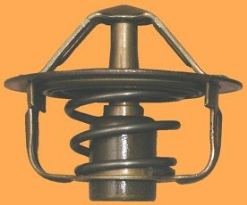
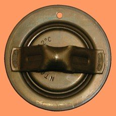
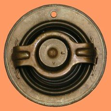
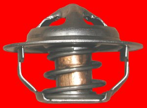
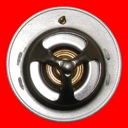
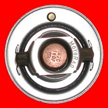

Identification of Original
Since a new thermostat would have to fit into the same housing on the Maxim-X, I began by noting the appearance, size and geometry of the original Maxim-X thermostat... which I could now measure and photograph, thanks to my Europian friend, Geurt.
|  |
 |
 |
| Original Thermostat - Profile |
Original Thermostat - Top |
Original Thermostat - Bottom |
Distinctive Features
In profile view, I noted that it was important that the measure of the vertical limits above and below the central hub must be equal or less for a replacement thermostat (ie. the top and bottom halves of the newer thermostat had to be shorter). A taller thermostat might interfere with the Maxim-X thermostat housing, as would one whose depth was greater as well. Similarly, it was important that neither the top nor bottom widths of a replacement exceed that of the original thermostat. A wider point anywhere along its profile could also interfere with the Maxim-X thermostat housing.
In plan view, I noted the size of the original thermostat aperture and also that the aperture was offset slightly from centre, toward the bottom of the pictures above. The aperture size, in part, would define how much coolant would pass through an open thermostat so finding a replacement with very nearly the same diameter of aperture was of paramount importance. I also noted the position of the vent hole relative to the aperture in the unlikely event that housing restrictions forced installation of a new thermostat with the vent in an unfavourable position, one that might trap air below the thermostat.
Measurement of Original
After noting all the relevant features, it was time to measure the original thermostat. Armed with a digital vernier caliper, I measured and re-measured every conceivable dimension of consequence until I was satisfied that the measurements were correct. It wasn't obvious until I began to measure, but thermostats aren't constructed as precisely as you might think. Almost nothing is square and measurements on one side
vary slightly from what should be symmetrical measurements on the opposite side. To complicate matters, the awkward shape wasn't always conduscive to using a caliper. Simply finding reliable maximum and average measurements was difficult and took a fair amount of time. Nevertheless, it had to be done.
Searching for Replacement
With the original thermostat, a caliper, notepad and measurements in-hand, I visited my local automotive parts supplier, Canadian Tire. It was truly difficult to decide where to begin when confronted with such a vast assortment of strikingly similar thermostats, so I decided on a systematic approach. I pulled up a chair and made myself
comfortable mid-aisle for the better part of two hours. Examining thermostats which were still in their packaging also made measuring difficult but relative dimensions seemed to be more important anyways. After several comparisons, it started to become apparent that many of the thermostats had standard outside diameters and that aperture diameters essentially came in two sizes - big and small - with only slight variations. I learned that REGULAR FLOW thermostats had the smaller diameter apertures and that HIGH FLOW thermostats had the larger diamater apertures... which conveniently matched the aperture diamater of the original Maxim-X thermostat. This new information made it possible to narrow the search considerably, by inspecting only HIGH FLOW thermostats, all of which appeared to have
equal aperture diameters. The search eventually ended with a single HIGH FLOW thermostat, with all the right dimensions, a MOTORAD 2040-180, Canadian Tire Part# 14-4380-8.
|  |
 |
 |
| New Thermostat - Profile |
New Thermostat - Top |
New Thermostat - Bottom |
It wasn't easy. I had made countless calls to suppliers, both in Canada and the United States. I tried motorcycle parts suppliers, marine parts suppliers, automotive parts suppliers and I even contacted several vintage cooling system specialists that claimed they could solve any cooling system problem for me. Yeah right.
After speaking to and involving countless people in my quest for a replacement thermostat for the Maxim-X, no one had anything helpful to say and all roads led back to Yamaha... until I took matters into my own hands.
At this point, I was fairly convinced that I had found a suitable replacement for the original Maxim-X thermostat.
Physically, the dimensions and characteristics were perfect so I thought it important to take the time to record dimensions before continuing to operational testing.
|